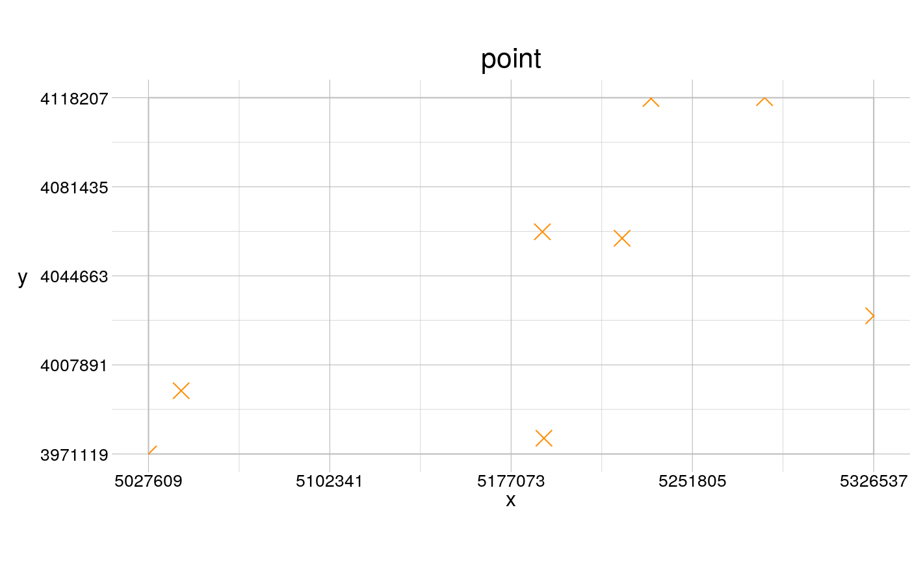

Create a point geometry
geomPoint(anchor = NULL, window = NULL, template = NULL, vertices = NULL, show = FALSE, ...)
| anchor | [ |
|---|---|
| window | [ |
| template | [ |
| vertices | [ |
| show | [ |
| ... | [various] |
An invisible geom.
Tools to modify geometries: gRotate,
gScale, gGroup
Tools to transform geometries
to other classes: gToSp, gToSf,
gToRaster, gFrom
Other shapes: geomPolygon,
geomRand
# create points programmatically somePoints <- data.frame(fid = 1:8, X = c(5190599, 5222810, 5041066, 5234735, 5326537, 5027609, 5281527, 5189955), Y = c(3977612, 4060164, 3997230, 4117856, 4028167, 3971119, 4118207, 4062838)) (pointsGeom <- geomPoint(anchor = somePoints, col = "darkorange", show = TRUE))#> class : geom #> type : point #> features : 8 (8 vertices) #> window : 5027609, 5326537, 3971119, 4118207 (xmin, xmax, ymin, ymax) #> extent : 5027609, 5326537, 3971119, 4118207 (xmin, xmax, ymin, ymax) #> scale : absolute #> crs : NA #> attributes : 2 (fid, n)# NOT RUN { input <- rtData$continuous # create points interactively myPoints <- geomPoint(template = input, vertices = 5, show = TRUE, col = "deeppink") anExtent <- geomRectangle(myPoints, show = TRUE, col = "green") # }